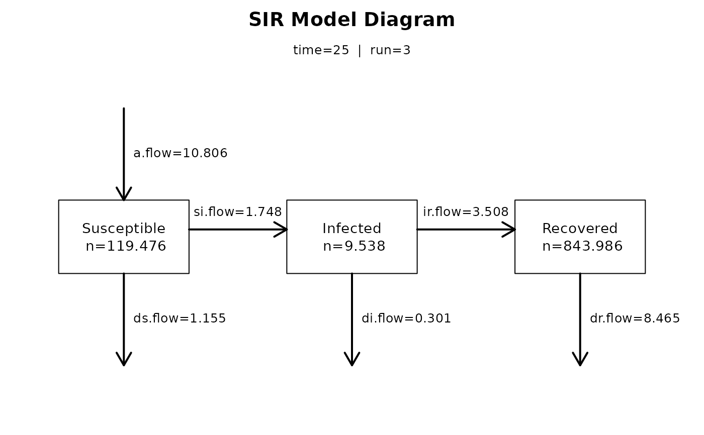
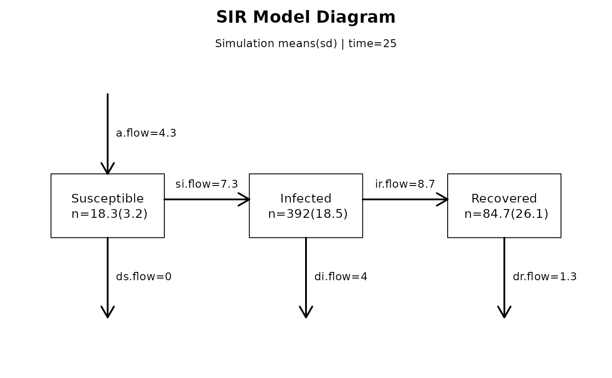

Plots a compartment flow diagram for deterministic compartmental models, stochastic individual contact models, and stochastic network models.
Usage
comp_plot(x, at, digits, ...)
# S3 method for class 'netsim'
comp_plot(x, at = 1, digits = 3, ...)
# S3 method for class 'icm'
comp_plot(x, at = 1, digits = 3, ...)
# S3 method for class 'dcm'
comp_plot(x, at = 1, digits = 3, run = 1, ...)Details
The comp_plot function provides a visual summary of an epidemic model
at a specific time step. The information contained in comp_plot is the
same as in the summary functions for a model, but presented
graphically as a compartment flow diagram.
For dcm class plots, specify the model run number if the model
contains multiple runs, as in a sensitivity analysis. For icm and
netsim class plots, the run argument is not used; the plots
show the means and standard deviations across simulations at the specified
time step.
These plots are currently limited to one-group models for each of the three model classes. That functionality may be expanded in future software releases.
Examples
## Example 1: DCM SIR model with varying act.rate
param <- param.dcm(inf.prob = 0.2, act.rate = 5:7,
rec.rate = 1/3, a.rate = 1/90, ds.rate = 1/100,
di.rate = 1/35, dr.rate = 1/100)
init <- init.dcm(s.num = 1000, i.num = 1, r.num = 0)
control <- control.dcm(type = "SIR", nsteps = 25, verbose = FALSE)
mod1 <- dcm(param, init, control)
comp_plot(mod1, at = 25, run = 3)

## Example 2: ICM SIR model with 3 simulations
param <- param.icm(inf.prob = 0.2, act.rate = 3, rec.rate = 1/50,
a.rate = 1/100, ds.rate = 1/100,
di.rate = 1/90, dr.rate = 1/100)
init <- init.icm(s.num = 500, i.num = 1, r.num = 0)
control <- control.icm(type = "SIR", nsteps = 25,
nsims = 3, verbose = FALSE)
mod2 <- icm(param, init, control)
comp_plot(mod2, at = 25, digits = 1)
